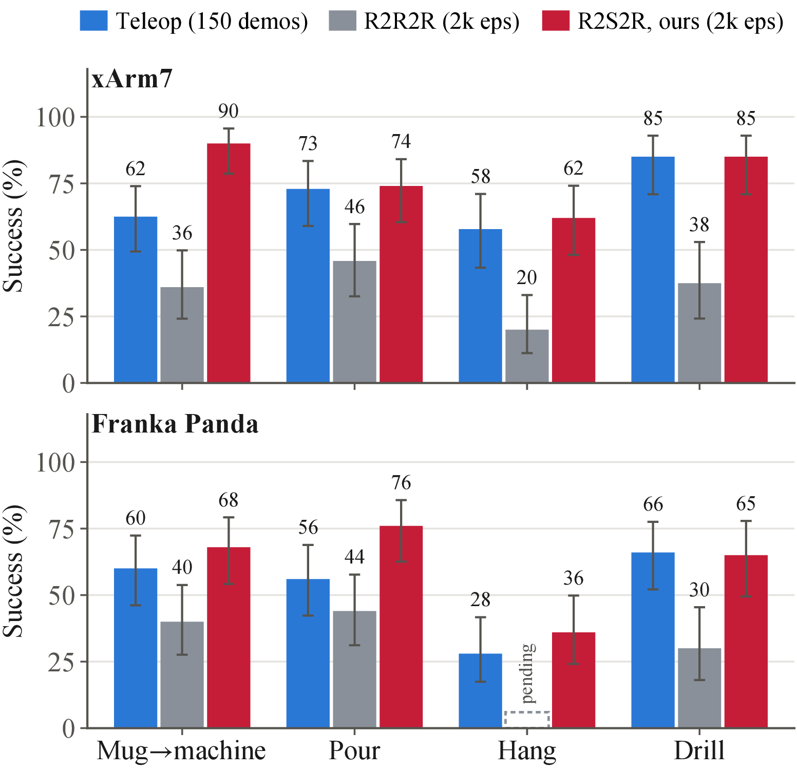

Real2Sem2Real: 3D Semantic Augmentations for Robot Learning from a Single Human RGB Demonstration

Live: one human video, thousands of robot demonstrations. Episodes our pipeline generated in IsaacSim, replayed in your browser on the xArm7. Switch between R2R2R+, which varies only the poses of the one demonstrated mug and coffee machine, and R2Sem2R, which also swaps in digital cousins, and run nine environments in parallel. In every episode the carry replays the mug trajectory tracked from the single human video (inset). Drag to orbit.
Teleoperation pays for every demonstration, and every new object instance pays again. Real2Sem2Real (R2Sem2R) turns one human RGB video into thousands of robot demonstrations across the object instances of a category, with no depth sensor and no teleoperation. It tracks the demonstrated objects, generates digital cousins of them from photographs, aligns the cousins to the demonstration by their semantics, and replays the demonstration for every cousin pairing in simulation.
Real-robot rollouts
We fine-tune the π0.5 vision-language-action model on three kinds of data and evaluate on real robots: teleoperation, 150 real demonstrations collected across several objects; R2R2R+, 2,000 generated episodes of the single demonstrated object pair, a strengthened Real2Render2Real run through our tracker, grasp selection and simulators; and R2Sem2R, 2,000 generated episodes across digital cousins.
Clips are sped up (the factor is under each clip), skip trials in which a person steps into view, and end before the scene is reset. The rates under each grid count every real-robot trial of the evaluated policies, 50 per policy and 40 for the drill; a few clips come from other runs of the same method.
On the real xArm7, ours sets the mug on the machine.
Mug on coffee machine. The demonstrated pair is the white mug and the black Keurig. Each success ends with the mug upright on the tray and the gripper released.
Other mugs on other coffee machines.
R2Sem2R policies on cousin mugs and coffee machines (labels: machine · mug), trained on 1,320 to 2,000 generated episodes from IsaacSim and MuJoCo. Every clip ends with the mug upright on the tray and the gripper released.
Hanging a mug by its handle on the tree.
Success: the mug hangs on the blue branch after the gripper releases it.
Pouring, and setting the drill upright.
The pour clip comes from an R2Sem2R policy trained on MuJoCo-generated data. Each drill clip ends with the drill upright and released.
The same pipeline on the Franka Panda.
The same human video and generation pipeline on a second robot.
On the Panda too, other mugs on other machines.
Eight cousin pairs, all from the same R2Sem2R policy (labels: machine · mug). Each ends with the mug upright on the tray and the gripper released.
Hanging a mug on the Panda: the same mugs for both methods.
Top: the white mug. Bottom: a brown mug. Success: the handle hooks over the low blue branch. Our white-mug recording stops with the handle on the branch, before the gripper opens.
Pouring on the Panda: the same mug and bowl for both methods.
Top: the white mug and light-blue bowl from the human video. Bottom: a navy mug and a pink bowl.
Setting the drill upright: the same drills for both methods.
Top: the demonstrated red drill. Bottom: a yellow cousin drill. Successes end with the drill upright and the gripper released.
Results

Digital cousins beat a single object pair on every task and robot, by 26 to 54 points, and match or beat teleoperation on every one, with no human time beyond the one demonstration.


A generated episode, replayed live in MuJoCo

Interactive: one of our generated MuJoCo episodes, simulated live. MuJoCo, compiled to WebAssembly, re-simulates the scene the episode was generated in. The robot replays the episode's recorded joint targets at 10 Hz while the mug, the table and the coffee machine are simulated with contact; as in our data generation, a soft weld holds the mug once the finger pads close on the handle and releases it on the tray. The generator keeps only episodes whose mug comes to rest on the tray, and each of the six object pairs ends on the tray when replayed here. Drag to orbit. The arrows show the forces on the mug, longer for larger forces: from the fingers in red, the table in blue and the coffee machine in orange. While the hand carries the mug, the red arrows at the fingertips show the force the weld applies to hold it. The panel gives the totals; resting on the table or the tray, or carried at a steady pace, they add up to the mug's weight, 2.9 N.
Limitations
Every cousin needs at least one photograph. Generating a category from text alone is future work.
Monocular depth is up to scale, which we resolve per scene from the recovered ground plane, so the demonstration must take place on a known supporting surface.
Grasp recovery needs a moment where the hand holds the object rigidly. Sliding or tool use without a grasp falls outside its scope.
Articulated objects such as drawers, doors and cabinets are the natural next step.